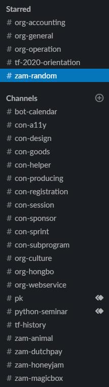

Slack
일을 하다보면 많은 이야기들이 오고 가죠. 대부분의 이야기는 Slack에서 이루어집니다. 일 얘기든, 아무말이든.
DM보다 채널에서 이야기해주세요! 진행 상황은 모두가 알아야 합니다.
리액션을 많이 해주세요! 누군가에겐 큰 힘이 될 겁니다.

채널
Channels를 누르면 채널 목록 전체를 볼 수 있습니다. 채널에 참가해보세요!
- #con-... : 컨퍼런스 등 파이콘 한국과 관련된 업무 채널입니다.
- #org-... : 준비위원회 운영을 위해 필요한 업무 채널입니다.
- #tf-... : 잠깐 반짝이는 TF 운영 채널입니다.
- #zam-... : 자유롭게 얘기하는 채널입니다.
- #org-general : 모든 사람들이 알아야 하는 내용이 공유됩니다. 잡담은 다른 채널에서 해주세요..
- #zam-random : 자유롭게 아무말하는 곳입니다.
태그
- @channel : 채널에 속한 모든 사람들에게 알림을 보냅니다.
- 채널에 있는 모두가 알아야 하는 내용을 전달할 때 사용합니다.
- @here : 현재 접속한 사람들에게만 알림을 보냅니다.
- 기타 등등 커스터마이징 할 수 있습니다.